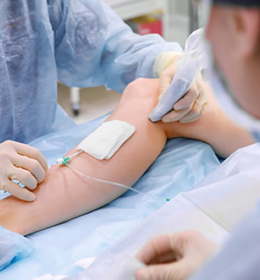

Radiofrequency Catheter Ablation is used to treat varicose veins that are enlarged with damaged or diseased valves, or vein disease. This minimally invasive procedure is done in our Heart Vein Vascular facility. a catheter is inserted into the vein through a small IV. Using the VNUS Closure® system, bipolar radio-frequency energy delivers thermal heat to the vein. The vein collapses around the catheter, and the catheter is then removed. Once the damaged vein is closed the blood will reroute to the healthy veins in your leg. The collapsed vein is absorbed by the surrounding tissue in your body over time.
Typically patients spend 1-2 hours at the treatment center, with the procedure itself taking about an hour. a local anesthesia is used, and most patients report feeling only slight discomfort, if anything. Most patients experience little to no bruising, swelling, or scarring. Please notify us if you are on any blood thinners, as this may increase bruisability. It may be recommended that you follow a walking regimen and refrain from heavy lifting or standing for prolonged periods for a few weeks following the procedure. As with any medical procedure, there are potential risks with the Closure procedure. At your consultation, the physician will review these risks and determine if your condition is right for this procedure.
For more information, watch our videos on the Radiofrequency Catheter Ablation procedure using vein ablation, or to learn about other varicose vein treatment options available at our Longwood vein treatment center, contact us today.
Risks / Side Effects of Radiofrequency Catheter Ablation
Side Effects of Vein Ligation, Ambulatory Phlebectomy, Anesthesia, and Intravenous Sedation as with any Surgical Procedure include but are not limited to:
Allergic or Toxic Reaction to the Local Anesthetic Cardiac Arrest (Heart stopping) Blood Loss Infection Thrombophlebitis (Blood clots) Nerve Trauma (Nerve injury) Postoperative Bleeding Ankle/Leg Swelling Skin Burn